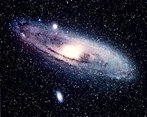

Guia das Galáxias

Galáxia de Andromeda
Descrição
A galáxia de Andromeda (Messier31, NGC224) é a galáxia espiral localizada a cerca de 2,54 milhões de anos-luz de distância da Terra na direção da constelaçao de Andromeda.
Dados Interessantes
- Além da Via Láctea, é a galáxia mais estudada
- Suas duas galáxias satélite, Messier 32 e Messier 110, são visíveis en binóculos
- Sua distância em relação a Terra ainda não foi bem definida